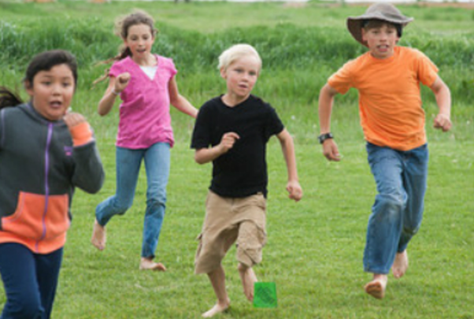
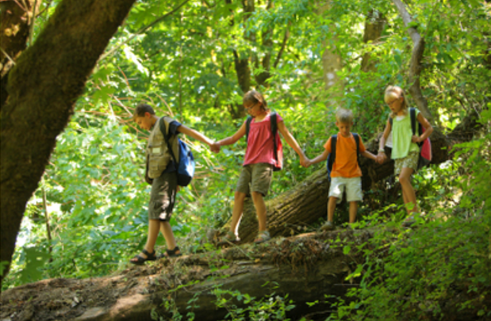

AWL (All Ways Learning) is a community of homeschool families that embrace families that homeschool their children in a variety of ways. Our community encompasses a diverse set of backgrounds, interests and educational philosophies. We strive to meet regularly and cooperatively to enhance our children's social and educational experiences.
We are in the South Bay area and we get together at different parks on Wednesdays each week. We have a wide range of ages from birth to 16 years old.
|  |  |
We consider our park day a weekly recess for our children. While our children play, parents support each other in our homeschooling endeavors. If you're having trouble figuring out what curriculum to use, or dealing with parenting challenges, there are plenty of people in our group to help guide and support you.
We are an inclusive group and we benefit from a variety of individuals that comprise our membership. If you would like to visit our group, please apply by signing up at our Google Group.